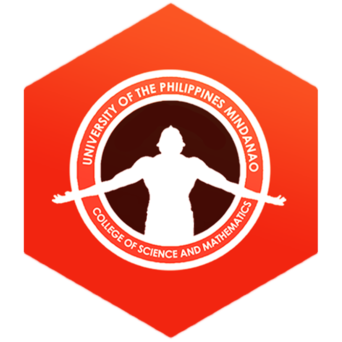

University of the
Philippines Mindanao
SHAPING MINDS THAT SHAPE THE NATION
University of the
Philippines Mindanao
SHAPING MINDS THAT SHAPE THE NATION

Opportunities in the college reflect the belief that an understanding of the methods and findings of science is best achieved through
first-hand experience in the process of conducting, analyzing, and reporting research. Students are encouraged to participate in this
process by working closely with faculty and other students in laboratory and field research, thus gaining direct knowledge of the power,
limits, and problems in scientific inquiry. These opportunities for direct experience with the tools of the scientist are liberally available
to the interested and motivated student.
The College of Science and Mathematics is to facilitate learning, understanding, and appreciation of science and mathematics as
a basis for creative endeavors, intellectual pursuits, careers, and critical consideration of issues confronting society.
The College has two equally important roles: (1) to provide specialized coursework for students enrolled in the College's undergraduate,
graduate and minor programs, and (2) to provide support and breadth courses in science and mathematics for all students of the university.